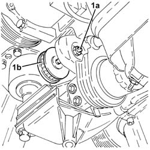

1092E14 COUNTER-ROTATING SHAFT DRIVE TOOTHED BELT TENSIONER - R + R WITH TOOTHED BELT REMOVED
- Path
- Procedures > 10 ENGINE UNIT > 1092 VARIOUS ENGINE COMPONENT CONTROLS > 1092E COUNTER-ROTATING SHAFT DRIVE > 1092E14 COUNTER-ROTATING SHAFT DRIVE TOOTHED BELT TENSIONER - R + R WITH TOOTHED BELT REMOVED
- Kind
- repair procedure (removal / refitting; the operation number is the code)
- Applies to
- engines: 2.0 JTS; all production periods
- Interactive page
- https://sloeber94.github.io/elrnDB-aGt/en/#/125001198
Applies to: engines: 2.0 JTS; all production periods
 Removing
Removing
 Refitting
Refitting1. Completely undo the nut (1a) loosened previously and remove the counter-balance shaft drive belt tensioner (1b).

Applies to: engines: 2.0 JTS; all production periods
Refitting
RemovingPlace the counter-balance shaft belt tensioner back in its housing and secure it without tightening the nut.